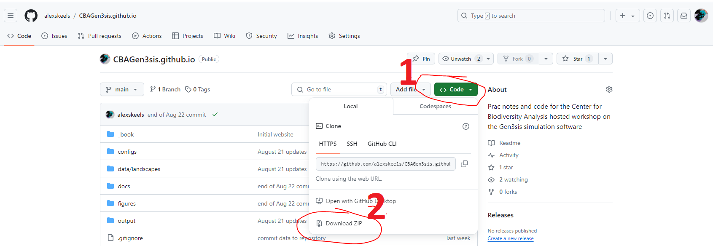

if (!require("here")) {
install.packages("here")
}
library(here)
#setwd(file.path("WHERE/YOU/UNZIPPED","CBAGen3sis.github.io"))1 üçç Gettin‚Äô Started
The first step to a successful workshop is ensuring everyone has the necessary software up and running on everyone’s machine. We’ll take a few minutes to get everything set up and take a sneak peek at some of the data we’ll be working with throughout the session, before moving on to the nitty gritty.
Download workshop files Github Repository
First thing is to download all of the data needed from github and set up our workspace.
Go to https://github.com/alexskeels/CBAGen3sis.github.io and download the repository as follows:
Put it somewhere on your machine that you can readily access
Unzip the folder
Open up RStudio
Set the working directory to this folder using here package.
This will make sure all the paths in the code are relative to the root, and things should work like magic.
Now you should be able to follow along, copying the code from this Quarto document into your console. The alternative option is to open the RProject file “CBA_Gen3sis_Workshop_2024.Rproj” and work directly within this project.
Install Packages
Today we’ll install the stable version of the package directly from CRAN as follows.
# install the package
install.packages("gen3sis")
# check the package version, we are on 1.5.11
packageVersion("gen3sis")You could also install the most recent version of the package from GitHub using devtools. But hold off on this today so we’re all working with the same version.
#install.packages("devtools")
#devtools::install_github(repo = "project-gen3sis/R-package", dependencies = TRUE)
#packageVersion("gen3sis")load gen3sis
library(gen3sis)Warning: package 'gen3sis' was built under R version 4.2.3The legacy packages maptools, rgdal, and rgeos, underpinning the sp package,
which was just loaded, will retire in October 2023.
Please refer to R-spatial evolution reports for details, especially
https://r-spatial.org/r/2023/05/15/evolution4.html.
It may be desirable to make the sf package available;
package maintainers should consider adding sf to Suggests:.
The sp package is now running under evolution status 2
(status 2 uses the sf package in place of rgdal)Now, lets source our support functions, to load some of the functions we’ll be going throughout the workshop. The first one is just a convenient way of installing packages if they are not already installed.
You can also install these other packages we’ll use throughout the workshop.
# Vector of packages to load and install if necessary
packages_to_load <- c("terra", "raster", "here", "ape", "phytools", "picante")
# Call the function with the vector of package names
unlist(lapply(packages_to_load, require, character.only = T))Loading required package: terraWarning: package 'terra' was built under R version 4.2.3terra 1.7.39Loading required package: rasterWarning: package 'raster' was built under R version 4.2.3Loading required package: spWarning: package 'sp' was built under R version 4.2.3Loading required package: herehere() starts at C:/Users/am92guke/Documents/iDiv/code/gen3sis_Australia_ANU_2024/CBAGen3sisLoading required package: ape
Attaching package: 'ape'The following objects are masked from 'package:raster':
rotate, zoomThe following objects are masked from 'package:terra':
rotate, trans, zoomLoading required package: phytoolsLoading required package: mapsLoading required package: picanteLoading required package: veganWarning: package 'vegan' was built under R version 4.2.3Loading required package: permuteLoading required package: latticeThis is vegan 2.6-4
Attaching package: 'vegan'The following object is masked from 'package:phytools':
scoresLoading required package: nlme
Attaching package: 'nlme'The following object is masked from 'package:raster':
getData[1] TRUE TRUE TRUE TRUE TRUE TRUEAccess Data
All the data for the workshop is stored in the ‘data’ folder, for your convenience, we set the paths to the variable data_dir (and others) on our support.R file
source("support.R")In this folder we include a paleoenvironmental reconstruction of South American temperature and aridity at a coarse spatial resolution of 2 degrees, and at a temporal resolution of 1 million years. This is a very rough temporal resolution but should do for our tutorial. Load it in and investigate some of it’s features.
# read the R data file
landscape <- readRDS(file.path("data","landscapes", "SA_coarse", "landscapes.rds"))
# class
class(landscape)[1] "list"# names
names(landscape)[1] "temp" "arid" "area"# dimensions
dim(landscape$temp)[1] 1476 68# take a look at first elements
landscape$temp[1:10, 1:10] x y 1 2 3 4 5 6 7
1 -94 12 NA NA NA NA NA NA NA
2 -92 12 NA NA NA NA NA NA NA
3 -90 12 NA NA NA NA NA NA NA
4 -88 12 NA NA NA NA NA NA 27.97588
5 -86 12 22.76293 28.90419 28.61839 28.47647 28.00591 27.22872 26.96520
6 -84 12 23.40779 29.34289 28.68802 28.96432 28.39244 27.69988 27.31383
7 -82 12 NA NA NA NA NA NA NA
8 -80 12 NA NA NA NA NA NA NA
9 -78 12 NA NA NA NA NA NA NA
10 -76 12 NA NA NA NA NA NA NA
8
1 NA
2 NA
3 NA
4 27.87671
5 27.05735
6 27.95244
7 NA
8 NA
9 NA
10 NA# column names
colnames(landscape$temp) [1] "x" "y" "1" "2" "3" "4" "5" "6" "7" "8" "9" "10" "11" "12" "13"
[16] "14" "15" "16" "17" "18" "19" "20" "21" "22" "23" "24" "25" "26" "27" "28"
[31] "29" "30" "31" "32" "33" "34" "35" "36" "37" "38" "39" "40" "41" "42" "43"
[46] "44" "45" "46" "47" "48" "49" "50" "51" "52" "53" "54" "55" "56" "57" "58"
[61] "59" "60" "61" "62" "63" "64" "65" "66"Coolies. We can use different spatial R packages to play with our data, and later on, with our simulated output.
library(terra)
# Present Day South America
SA_1 <- rast(landscape$temp[ ,c("x", "y", "1")])
SA_65 <- rast(landscape$temp[,c("x", "y", "65")])
# plot present day
plot(SA_1)# plot 65 Million years ago
plot(SA_65)Lets overlay the maps to get an idea of how much South America has changed since the dinosaurs went extinct.
# overlay
plot(SA_65, col=rgb(1,0,0))
plot(SA_1, col=rgb(0,0,1,0.5,1), add=T)
Access Configs
Load in a config file containing the rules and parameters of a single simulation. We’ll get into what this all means in the next chapter.
config <- create_input_config(config_file = file.path("configs", "config_southamerica_Day1Prac1.R"))
names(config$gen3sis)[1] "general" "initialization" "dispersal" "speciation"
[5] "mutation" "ecology" names(config$gen3sis$general)[1] "random_seed" "start_time"
[3] "end_time" "max_number_of_species"
[5] "max_number_of_coexisting_species" "end_of_timestep_observer"
[7] "trait_names" "environmental_ranges"
[9] "verbose" Run a Single Simulation
Now time to run a simulation in South America. We’ll just run from 20 million years ago to the present-day at 1 million year intervals so it runs quick enough to finish in a couple of minutes. Note the output as it runs. Think about what its printing.
sim <- run_simulation(config = file.path("configs", "config_southamerica_Day1Prac1.R"),
landscape = file.path(data_dir,"landscapes", "SA_coarse"),
output_directory = "output/SouthAmerica",
verbose=1)Now read in some of the outputs.
# read phylogeny
phy <- read.nexus(file.path("output", "SouthAmerica", "config_southamerica_Day1Prac1", "phy.nex" ))
# plot phylogeny
plot(phy, cex=0.1, type="fan")
If you’ve made it this far, great! You’re equipped with the tools, now we’re ready to explore how Gen3sis works in more detail.